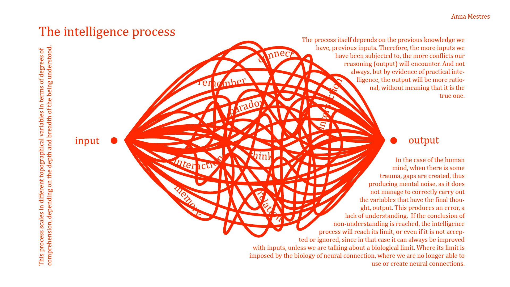

Designing with AI
Reflection of intelligent machine
We use the AI as a reflection of the human been brain to make it useful. So understand how it works is essential.
As a reflection of it, the meaning of intelligences is correlated with; thoughts, understanding and connecting.
I made this graphic to understand how I see the intelligent become.

Ethics and Moral
Here we can find some games about ethics and moral made it with IA. I already did it and those are my results.
Anti Sleep Paralysis Device
Final presentation about Anti Sleep Paralysis Device
Some websites of interest